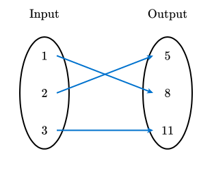
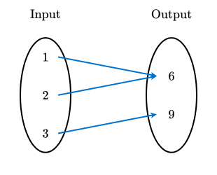
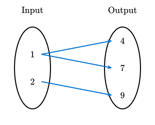
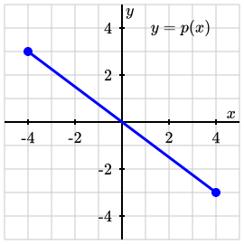
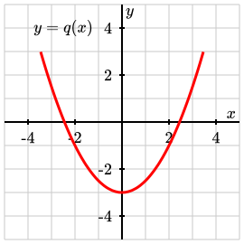
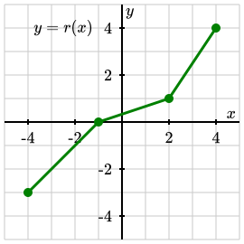
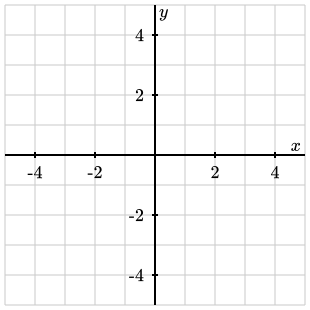

Objectives
-
I can determine whether a function has an inverse with justification and find values of the inverse given input-output pairs of the original.
| \(x\) | \(1\) | \(2\) | \(3\) | \(4\) | \(5\) |
|---|---|---|---|---|---|
| \(f(x)\) | \(4\) | \(7\) | \(2\) | \(9\) | \(5\) |
| \(x\) | \(0\) | \(1\) | \(2\) | \(3\) | \(4\) |
|---|---|---|---|---|---|
| \(g(x)\) | \(3\) | \(6\) | \(3\) | \(8\) | \(1\) |
| \(x\) | \(-2\) | \(-1\) | \(0\) | \(1\) | \(2\) |
|---|---|---|---|---|---|
| \(h(x)\) | \(4\) | \(1\) | \(0\) | \(1\) | \(4\) |






| \(x\) | \(-2\) | \(0\) | \(1\) | \(3\) | \(6\) |
|---|---|---|---|---|---|
| \(w(x)\) | \(7\) | \(3\) | \(-4\) | \(0\) | \(1\) |

| \(x\) | |||||
|---|---|---|---|---|---|
| \(f(x)\) |